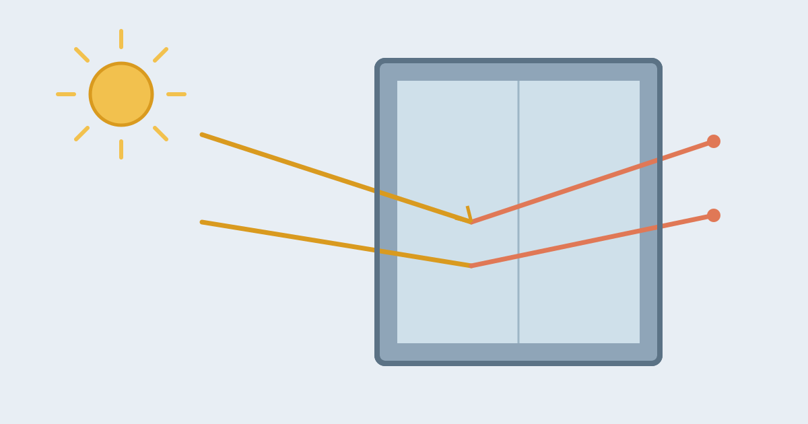

How Do Mirrors Reflect Light?

Stand in front of a mirror and you see yourself looking back, as clearly as if another person were standing behind the glass. The mirror is not showing you a picture, and it is not storing anything. It is simply bouncing light back at you in a very orderly way, and your eyes and brain do the rest, turning those returning rays into an image that seems to stand behind the glass.
A mirror works because of two things: a surface smooth enough to reflect light without scattering it, and a shiny coating that reflects almost all the light that reaches it. Remove either one, and the magic disappears. Understanding those two ingredients explains almost everything about mirrors, from why the image is flipped to why a puddle can act like one.
What a Mirror Actually Is
A household mirror is a sheet of glass with a thin layer of metal, usually silver or aluminium, painted onto its back. The glass itself does almost nothing except protect the metal and give the mirror its flat shape. Light passes through the glass, hits the metal coating, and bounces back through the glass toward your eyes. The back of the mirror is usually covered with paint to keep the metal from tarnishing.
Older mirrors were made by coating glass with a mixture containing silver, and some antique mirrors have a slightly cloudy or spotted look because that coating has aged. Modern mirrors often use aluminium, which is cheaper and resists tarnishing better, and the result is the same: a bright, even reflection. Polished metal alone can also work as a mirror, which is why a well-polished spoon or a chrome bumper shows a distorted reflection even with no glass at all.
Reflection: Why Light Bounces Back in Order
Light travels in straight lines, and when it strikes a surface it bounces off at the same angle it arrived at, like a ball bouncing off a floor. Scientists call this the law of reflection: the angle of the incoming ray and the angle of the outgoing ray are equal, measured from a line drawn straight out from the surface.
The key difference between a mirror and an ordinary wall is smoothness. A wall looks rough at a tiny scale, so its surface is covered in microscopic bumps that scatter incoming light in every direction. The light still bounces, but the rays leave in a jumble, and your eye sees only a diffuse glow with no image. A mirror's surface is smooth down to a scale smaller than the wavelength of light, so every ray bounces off in the same orderly way it arrived, and the pattern of the rays is preserved. Your eye follows those orderly rays back and perceives them as coming from an image behind the mirror, even though nothing is really there.
Why the Image Looks Left-Right Reversed
The famous puzzle of mirrors is that your reflection seems to swap left and right, but not up and down. Raise your right hand, and the person in the mirror raises their left hand. Yet your head stays at the top and your feet at the bottom. It feels strange, but the mirror is not actually swapping left and right at all.
What a mirror really reverses is front and back. The image is flipped along the direction pointing into the mirror, like a glove turned inside out. Your brain then has to interpret that flipped image, and it does so by imagining a person facing you, rotated around the vertical axis. That imagined rotation is what makes left and right appear swapped. If you imagine the person rotating around a horizontal axis instead, like doing a somersault, the image would appear flipped top to bottom instead. The mirror does the same thing in both cases; it is your brain's choice of how to explain it that creates the left-right swap.
Why Some Mirrors Distort
A flat mirror gives a true image, but change the shape and the image changes too. A mirror that curves outward, like the back of a spoon or a shop security mirror, spreads the reflected rays apart, so the image looks smaller and shows a wider area. A mirror that curves inward, like the inside of a spoon or a shaving mirror, brings the rays together, making the image larger and closer.
Cheap mirrors sometimes give a wavy image, and that is usually because the glass itself is not perfectly flat. Even a tiny ripple in the surface changes the angle of reflection at that spot, and the image bends with it. Old mirrors can develop this wobble as the glass ages or the coating deteriorates, which is why reflections in antique mirrors often look slightly uneven.
Two-Way Mirrors and One-Way Glass
A two-way mirror, sometimes called a one-way mirror, is a sheet of glass with a much thinner metal coating than a normal mirror, so thin that it reflects only part of the light and lets the rest through. Whether it acts as a mirror or a window depends on which side is brighter. From the bright side, the reflected light overwhelms the small amount coming through, so it looks like an ordinary mirror. From the dark side, the light coming through is stronger than the faint reflection, so it looks like a window.
This is why two-way mirrors are used in interview rooms and observation windows, with one room brightly lit and the other kept dark. Turn the lights around, and the effect reverses. There is no trick coating that works in both directions at once; the mirror is simply half reflective and half transparent, and the brighter side wins.
Common Misconceptions
One common belief is that mirrors reflect perfectly, sending back all the light they receive. They do not: even a good household mirror absorbs a small amount of light, which is why two mirrors facing each other produce reflections that grow dimmer and greener with each bounce, as if the image were fading down a tunnel. Another is that a mirror swaps left and right on purpose, as if it were a machine designed to do so; as explained above, it only reverses front and back, and the left-right swap is your brain's interpretation. A third is that you need silver for a mirror. Silver works well, but aluminium and other shiny metals work too, and the earliest mirrors were simply polished stone or bronze.
Frequently Asked Questions
Why can a still puddle act like a mirror?
Calm water is very smooth, so it reflects light in an orderly way, just like glass. The reflection is dimmer because water reflects only a small part of the light, and the slightest ripple breaks the smoothness and blurs the image.
Why do mirrors make a room look bigger?
Your brain reads the reflected image as extra space behind the wall, so the room feels deeper than it is. The effect is strongest with a large, flat mirror placed where it reflects an open part of the room.
Can a mirror reflect a mirror forever?
Almost, but not quite. Each bounce loses a little light to absorption in the glass and metal, so the repeated images fade and take on a greenish tint as they recede, until they disappear into darkness.
Conclusion
A mirror is a simple device with a surprising result. A flat sheet of glass protects a thin metal coating, the coating bounces light back at exactly the angle it arrived, and the smoothness of the surface keeps the rays in perfect order. Your eyes follow those rays and your brain builds an image that seems to stand behind the glass, flipped front to back, which you read as left and right swapped. Change the shape of the surface and the image bends; thin the coating and the mirror becomes a window from the dark side. The next time you look in a mirror, remember that nothing is really behind the glass: it is only light, bouncing back in order, and your brain doing the rest.